各位好，非常歡迎大家來參加今天這場專題講座。接下來大約六十分鐘，我們要一起鑽進 Simon Fischer《Basics》這本書裡的「左手」這一章，也就是原書一〇二頁到一四四頁，從第一四三號練習一路到第二〇三號。
我先講一個觀念，這個觀念貫穿了整整一章——如果你今天只帶一句話回家，就帶這句：左手手指的壓力，「該用多少就用多少，能多輕就多輕」。Simon Fischer 把它當成左手技術唯一的最高原則。重點在哪裡？當你的手指又輕又敏感，能感覺到琴弦那種有彈性的回彈，整隻手就會找到一種很大的「鬆」。你不是用力把弦「釘」在指板上，你是順著弦本身的彈跳去用力，手指只要把弦壓彎到剛好能發出實音的程度就好，多一分都是浪費。
為什麼要這麼斤斤計較這一點點壓力？因為身體是一個整體。緊張不會乖乖待在原地，它會擴散。手指一旦過度施壓，根部關節跟掌心就跟著緊，接著手腕僵掉，然後一路爬到上臂，最後跑到你的肩膀跟脖子。所以我們從「最小壓力」這個源頭去管，等於是替整條手臂、整個上半身鬆綁。
接下來這六十分鐘，我們會走過大約十二個實作主題，每一個我都會給你可以直接帶進琴房的具體練習。在進入細節之前，我先把貫穿全章的五大主題預告一下，你心裡有個地圖：
第一，最小壓力，還有「音與音之間的放鬆」——按完一個音要懂得釋放。等一下我們會用 Ex.145 這類練習，去體會實音跟泛音之間那條壓力的界線。
第二，手指要「從根部關節」動，也就是手指的「肩膀」那個地方發力，手掌本身保持安定、不要亂晃。
第三，講快手指。這裡有個聽起來很矛盾的訣竅：要快，反而要「晚而快」——把動作留到最後一刻，又晚又快地落下去。神奇的是，這樣做會讓飛快的樂句感覺起來變慢、變從容。
第四，預備與重疊——上面的手指還沒抬起來之前，下面的手指就先準備好、先就位。
第五，方形手型跟伸展手型的切換，而且不管怎麼換，手都要穩穩留在把位上。
這五條會像五條主線，反覆出現在我們接下來談的每一個題目裡。好，地圖畫好了，我們就從第一個主題——最小壓力——開始進琴房。
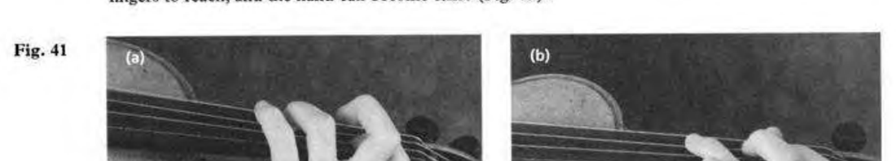
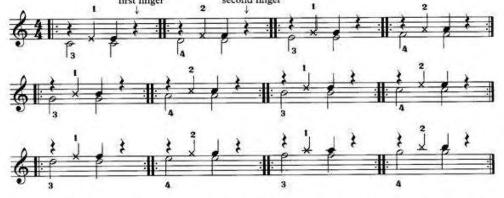
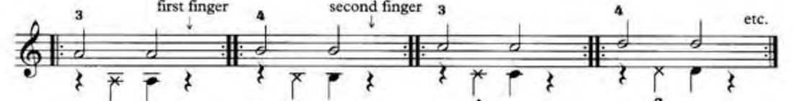
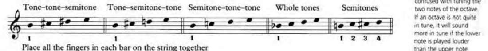
各位，我們現在進到一個很多人怕得要死的地方：三度。但我要先講一個觀念，它會改變你練三度的整個體感——重點不在手指多會撐，而在「你的手是靠在哪幾根手指上」。
來看 Ex.143。一般我們的手習慣性地以一、二指為重心，對不對？問題就出在這裡。如果你的手是靠在一、二指上，那上面的三、四指就會變成「拼命往上搆」的狀態，一往上搆，整隻手就緊掉了，手型一垮，音準就跟著垮。所以 Fischer 給的第一個關鍵是：把手的重心往後挪，主要靠在三指和四指上，讓下面的一指、二指是「往回搆」的，而不是上面的手指往上撐。這樣不只三度比較鬆，連你整體的左手位置都會變得更平衡、更自然。
好，我們實際做一次。第一步：先放三指。放下去之後，不要急著找其他手指，先把整隻手的形狀調整成「服務這根三指」——手指是圓的、放鬆的，根部關節不往上頂、不去伸展。記住，這時候大拇指根部跟一指之間，那個空間要保持打開，不要夾死。
第二步，是這個練習最精華的地方：在「完全不改變三指形狀」的前提下，無聲地把一指加下去，組成一個三度的雙音。注意喔——是無聲，你先不要拉，純粹用手指去搭。你會發現，因為手已經是靠在三指上的，一指是輕輕往回搆過來的，它不會去干擾三指。如果你加一指的瞬間，三指被扯歪了、或者手緊起來了，那就代表你的重心還是錯的，退回去重來。
接著換上面那一組。現在把重心改成偏向四指，一樣，先讓手服務四指，然後在不改變四指形狀的情況下，用二指往回搆，搭成另一個三度。最後再整個往上換把。這四個步驟——放三指、無聲加一指、偏向四指、二指往回搆——就是整個三度手型的核心邏輯。
那有指八度呢？方法一模一樣，就是把這套「靠上面的手指、下面往回搆」原封不動搬過來。但有兩個技術細節我要特別提醒，尤其手比較小、中等的人：第一，四指要盡量保持圓，不要讓它扁掉、攤平，這是手小的人最容易犯的。第二，大拇指要充分往前送，放在兩根手指的正中間那個位置，當作支撐的中點。拇指一往前，整個八度的架構就穩了。
最後，我要分享一個原書註腳裡很妙的觀念，這個會幫你「救」音準。把手靠在上面的手指，這件事本身——它跟「把八度調準」是兩回事，不要搞混。它是手型的策略，不是調音。可是這裡有個聽覺上的小祕密：如果你的八度稍微有一點點不準，這時候，只要你讓「下面那個音」比上面那個音大聲一點，整個八度聽起來就會「比較準」。是的，不是去動手指，而是動音量平衡——下面的音撐住、放大一點，上面的瑕疵就被蓋過去了。這在現場演奏救急的時候，超級實用。
所以今天這一段，請大家把它濃縮成一句話帶走：三度跟八度，靠的是上面的手指，下面的手指往回搆，而不是往上撐。回去練 Ex.143 的時候，全程用無聲、慢動作去檢查——只要你加下面手指的時候上面那根被動到了，就退回去。手鬆，型不變，音準自然來。
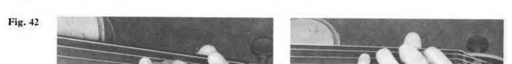
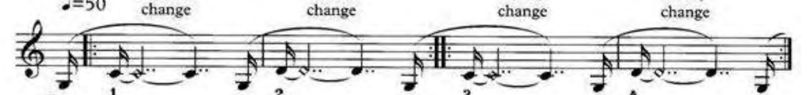
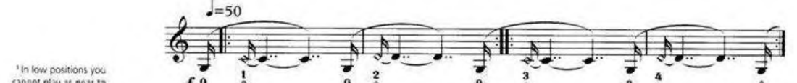
各位同學，我們現在進入左手非常核心、也是最容易被忽略的一塊——「手指壓力」。原書是在第一百零三到一百零六頁。我先講一句總綱，這句話請大家記在心裡：「必要時用足夠的力，但永遠用最少的力。」英文是 as much as necessary, but as little as possible。整段的精神都在這一句裡。
我們先從一張「壓弦檢查表」開始。當你的手指壓下去把弦按實、要發出一個實音的時候，請你像跑檢查清單一樣，一項一項問自己：第一，拇指的反向壓力有沒有壓到最小？拇指是在另一側做反向支撐，它只要剛好對得住就好，不需要用力夾。第二，我壓的力，是不是只夠發出一個乾淨的音就好，沒有多餘？第三，根部關節，也就是 base joint，手指跟手掌相接的那個大關節，有沒有放鬆？第四，那些此刻沒在按弦、停在弦上方的手指，是不是也是鬆的？第五，手指跟手指之間有沒有在側向互相夾擠？這個很常見，很多人不自覺地把手指往旁邊用力。第六，手腕放鬆了嗎？第七，上臂有沒有被往右拉太多？第八，琴有沒有被肩膀跟下巴夾得太緊？這八項，是你之後所有練習要時時回頭檢查的標準。
接下來第一個練習，Ex.144，練的是「手指獨立性」。重點是：按弦的時候，不要主動把一根手指往另一根手指側向去壓。我們這樣做：把所有手指輕輕放在弦上，輕到什麼程度？輕到泛音的程度，就是你只是觸碰、不壓實。然後，非常慢地，只把其中一根手指往指板推下去，慢慢推到底——而且過程中其他地方完全不動，其他手指不動、手腕不動、拇指幾乎沒有反應。推到底之後，再一樣慢慢放回到泛音的輕觸。每一根手指都這樣做一次。記得用上各種全音、半音的組合，也就是方形和伸展的不同手型都練到。你會發現，要做到「只動一根、其他都鬆」，比想像中難很多，而這正是獨立性的核心。
第二，最小壓力，Ex.145 跟 Ex.146。先給大家一個觀念上的轉換：很多人腦袋裡的畫面是「手指落下＝壓到指板」，請把這個畫面換掉。換成什麼？換成「在弦的彈性上演奏」，picture playing on the string's bounciness——你是在那根有彈跳感的弦上工作，不是把它壓死在木頭上。
Ex.145 我們做一個「泛音到實音、慢慢轉換」的練習。你從泛音的輕觸開始，壓力非常、非常慢地往上加，慢到你可以清楚感覺到那個臨界點——泛音剛剛破掉、實音剛剛乾淨地發出聲音的那一瞬間。找到那一點，就停在那裡，一點都不要多。練的時候，弓走在靠近琴橋的地方，拉強一點、弓重一點，但左手保持輕。記住這個搭配：弓重、左手輕。
Ex.146 是「五階段」練習，幫你校準到底多少才夠。同一個音，拉 ff，用五種不同的手指壓力來試：第一階段，手指只是剛好觸到弦——這時候會是沙沙的、刮的聲音；第二階段，壓四分之一；第三階段，壓一半；第四階段，壓四分之三；第五階段，壓到「剛剛好夠」。注意第五階段一個重要的細節：你的指腹可能會碰到指板，但弦本身並沒有被壓到指板上。這個差別你要親自摸出來，這就是「最少的力」的手感。
第三，音與音之間的放鬆，Ex.147。這裡有一句話我特別喜歡：肌肉動作有幾次，放鬆就要有幾次——there must be as many releases as muscular actions。意思是，你不能只是一直壓、壓、壓，每一次用力之後都要有一次對應的鬆開。具體怎麼練？在一個泛音的時候，趁下一根手指正要落下的那個空檔，把根部關節跟拇指放鬆掉。讓「下一指落下」這件事，本身就帶著「上一個動作的放鬆」。這樣你的左手才會是有呼吸的，而不是從頭緊到尾。
最後，雙音的手指壓力，Ex.148，這也是很多人緊張的根源。先講一個關鍵的觀念：雙音聽起來要跟單音一樣飽滿、一樣大聲，靠的是什麼？靠弓——弓要重很多。但手指壓力呢？手指壓力維持不變，而且一樣輕。請特別記住：在雙音上把手指壓過頭，是非常常見的緊張來源。很多人一拉雙音就反射性地把兩根手指都用力夾，結果整隻左手就僵掉了。
練習的方法是這樣：把雙音拆開來練弓。第一，只拉下面那條弦；第二，只拉上面那條弦；第三，兩條一起拉，但刻意一條重、一條輕。在這三種練法裡，從頭到尾，你的手指都要保持非常輕。讓你的耳朵跟手記住：音量是弓給的，不是手指夾出來的。
好，這一段我們從一張壓弦檢查表開始，走過 Ex.144 的獨立性、Ex.145 跟 146 的最小壓力、Ex.147 的音間放鬆，到 Ex.148 的雙音。串起來其實就是同一件事：用最少的力，把音按乾淨，然後在每一個動作之後，記得放鬆。
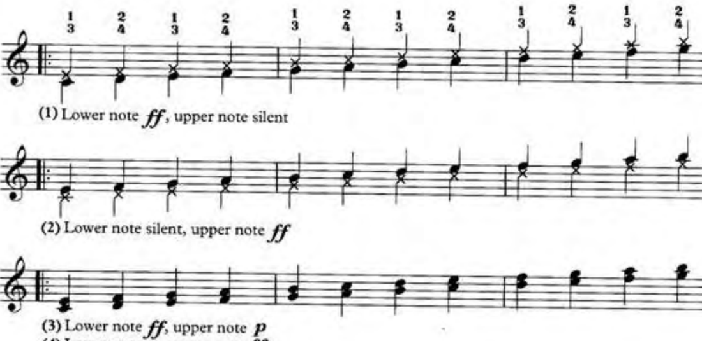
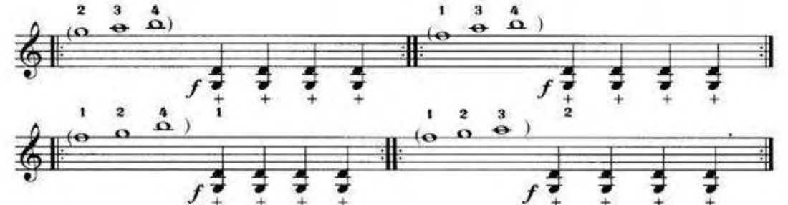
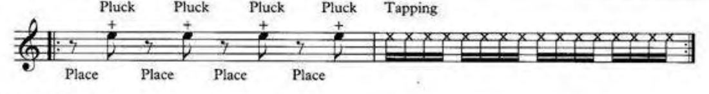
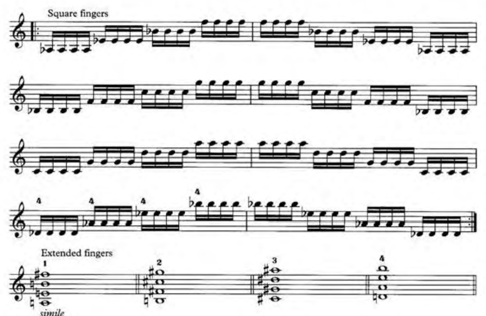
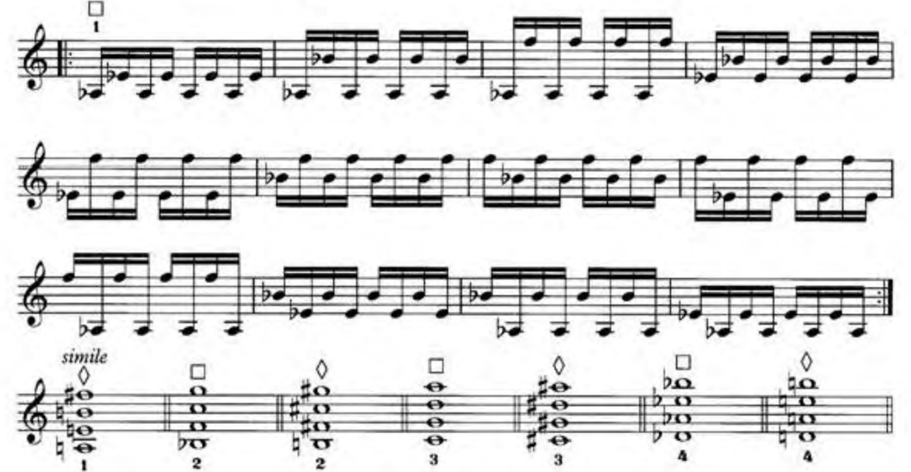
好，我們接著進到左手最核心、也最容易被忽略的一件事——手指到底要「從哪裡」動。請大家先把右手放下，左手擺成演奏的姿勢，跟著我一起感覺。
Fischer 在這一段（原書一〇六到一一二頁）給了一個很有畫面的比喻：我們的手指、手臂、腿，其實都各有三段槓桿，而且最上面那一段力量最強。你看喔，手臂是「肩—肘—腕」，腿是「髖—膝—踝」，那手指呢？對應過來就是：根部關節像「肩膀」，中間關節像「手肘」，最靠近指甲那一節像「手腕」。
關鍵在哪裡？手指主要的動作，應該來自最強壯的那一段，也就是「根部關節」，base joint，我喜歡叫它「手指的肩膀」。如果你從中間關節去動，或者更糟，整隻手從手腕往下掉去按弦，那個輕鬆感就死掉了，緊繃馬上跟著來。這是 Fischer 一直在提醒的：別讓動作發生在錯的槓桿上。
還有一個觀念要在這裡校正過來：我們不是「抬」手指，lift，而是「拉回」——從根部關節把手指往後帶。而且最重要的一句話：往後拉的時候，手指的形狀不要變，那個弧形要保留住。很多人一抬，手指就伸直了、僵了。
我們先做一個小測試。手擺好演奏位置，現在一根一根，從根部關節讓手指往前、往後動，記得——整隻手要完全不動。可以的話，用右手輕輕扶住左手手背幫你檢查（這就是書上 Fig 45 的做法）。如果手會跟著晃，代表你動到的是別的地方。
接下來三個暖身，就是 Ex.149 到 Ex.151。
Ex.149：手先輕輕握成一個鬆鬆的拳頭，然後快速地把手指往後彈開——重點是保持那個弧度，拇指完全不要動。感覺手指是「彈」開的，不是「撐」開的。
Ex.150：把三根手指壓在 E 弦上不動，用剩下那一根手指，從根部關節去撥 G 弦或 D 弦。節奏要非常平均——放、等、撥、等，放、等、撥、等。你會很清楚感覺到，動的只有那一根手指的根部關節。
Ex.151：把手掌平貼在小提琴的肩部，一次用一根手指去撥空弦 E，然後接著往下叩——叩、叩、叩、叩。
好，這就帶到這一段的主角：無聲叩擊，silent tapping。Fischer 講得很清楚——它就是左手版的「右手發聲練習」。右手我們練發聲、練音色，左手就用無聲叩擊來孤立、純化手指的動作。
怎麼做？手指叩下去，你要能「聽」見寫出來的音高，噠—噠—噠—噠。注意，是要感覺到那個彈性、那個 bounciness，而不是一個沉甸甸的撞擊。往後拉回的時候，再次提醒，保持貼弦的弧形；動作來自根部關節，手保持不動。不確定的話，老樣子，用另一隻手扶住手背檢查（Fig 45）。
手肘要怎麼配合？拉 E 弦的時候手肘偏左一點，因為那一側的根部關節比較低；拉 G 弦的時候手肘偏右，因為根部關節比較高。拇指呢？放鬆、向前、大約對著二指的位置。Fischer 還建議一個進階練法：把拇指離開琴頸，讓琴頭頂著牆壁，這樣你會更清楚手指是不是真的獨立在動。
速度怎麼安排？先從一分鐘 60 到 66 開始，慢慢推到 80、92。但記住，速度一快，手指就要保持靠近指板，不要彈太高。
最後是叩擊練習 Ex.152 到 Ex.159。這裡有個很細的重點：先保持「同一個把位」不動，只去改變手指的「形狀」。你會發現，方形的降 A，跟伸展的還原 A，那個手感是完全不一樣的——square 跟 extended，手指撐開的距離不同，肌肉記憶也不同。等這個熟了，再用「手指」去移動把位，而不是靠整隻手去搬。然後把它擴展到三度、四度、六度、八度，全部都用叩擊的方式來練。
所以你看，從根部關節這一個觀念出發，一路延伸到暖身、無聲叩擊、再到各種音程的形狀——核心永遠是同一句：動對地方，左手才會輕鬆。我們待會就一根一根來實際操作。
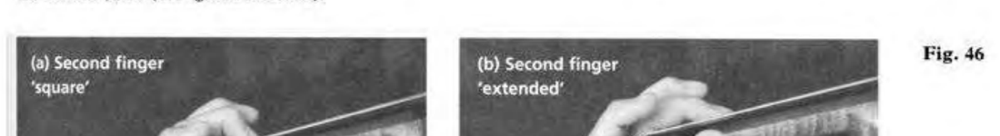
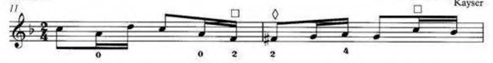
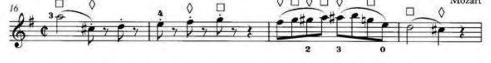
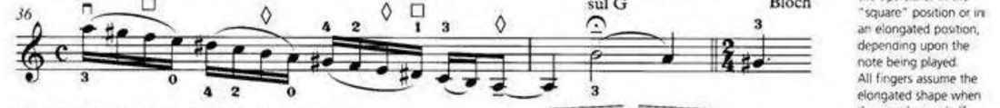
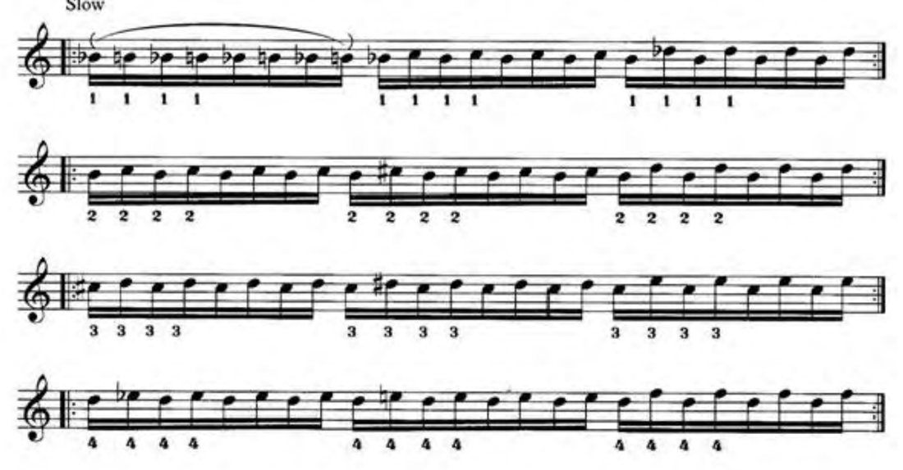
各位同學，我們現在進入「左手」這一章裡很關鍵的一個觀念——方形與伸展（square 跟 extended）。這在原書第 113 到 116 頁，練習編號是 Ex.160 到 Ex.163。
先講清楚一件事：方形跟伸展，講的是手指「放在弦上的形狀」，注意喔，是手指的形狀，不是手的位置移動，這個區別非常重要，等一下會一直回來提醒大家。
我們看書上的兩張圖。Fig.46a 是「方形」，書上用的例子是第二指在 A 弦上按 C 還原音。所謂方形，意思是從指甲關節到中間關節這一段，角度比較接近直角。各位可以低頭看自己的手指，當你按 C 還原的時候，那個指節是比較「立起來」、比較拱的。Fig.46b 是「伸展」，按的是升 C。伸展的時候，從指甲到中間關節這一段就變得比較「直」——但請注意，它還是彎的喔，只是相對比較伸直，不是整根攤平。
這裡有一個很多人誤會的地方：方形，不一定要剛好九十度。實際上常常只有四十五度左右，它只是「比較方」而已，相對於伸展來說更立起來。還有第四指，第四指永遠不會像其他手指那麼方，這是它先天的結構，大家不用勉強它。那到底什麼時候用方形、什麼時候用伸展？答案是：要看你在哪個把位、看周圍的音是什麼，由前後的音來決定。
我引用 Galamian 的一句話，講得很精準：手指都是落在指尖上，可能是方形、也可能是拉長的，取決於那個音；而且只要你要往上夠一個半音或更多，所有的手指都會拉長、伸展。這句話幫我們把原則記起來。
接下來書上給了三個音樂上的例子，我帶大家走一遍。
第一個，Kayser 練習曲 op.20 第 3 首。這裡的重點是：第二指在「同一個把位裡」，要從方形變成伸展。手不動，純粹靠手指的形狀變化去完成。
第二個，莫札特《弦樂小夜曲》K.525 第四樂章。這個是書上特別點出來的「常見錯誤」，請大家記住：很多人手指一直維持方形不變，然後用「整隻手平移半音」去夠那個音。結果呢？音準會出問題。為什麼？因為這時候手既不在這個把位、也不在那個把位，它卡在一個「沒有真正把位」的狀態，音當然不準。
第三個，Bloch 的《Nigun》。這裡第一指非常頻繁地在方形跟伸展之間切換。書上提醒：如果你是用「手往下移」去找一個方形的手指，那後面接的音就會偏低、會 flat。
所以三個例子其實指向同一件事：用手指形狀去解決，不要用手去搬。
那要怎麼練？所有這些練習都共用一條核心規則，請大家寫下來：手保持「不動」，只動手指；根部關節——也就是 base joint——要放鬆、要軟；速度從慢、到中、到快。我帶大家做：先把手放好，第二指按方形的 C 還原，手腕手臂都不要動，只讓第二指自己變形，伸展上去到升 C，再回到方形。來回幾次，全程感覺根部關節是鬆軟的，不要僵硬。慢速做穩了，再到中速，最後快速。
另外提醒一點，書上有講：手指預備的練習——也就是 finger-preparation——同時也在訓練你的方形跟伸展。所以這兩件事是綁在一起練的，不要分開看。
總結一句：方形跟伸展是「手指換形狀」，不是「手換位置」。把這個分清楚，你的音準和換弦就會穩很多。我們休息一下，等一下進到下一個段落。
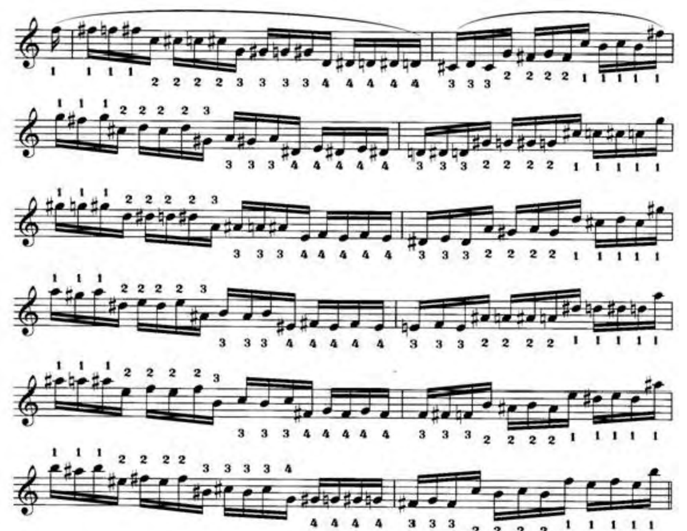
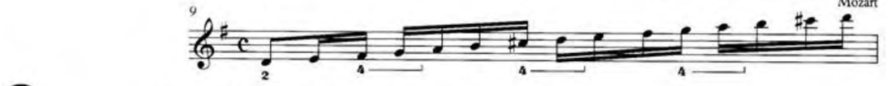
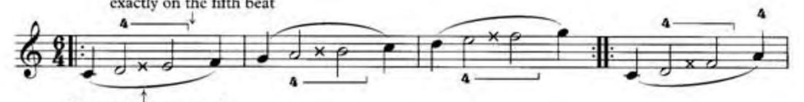
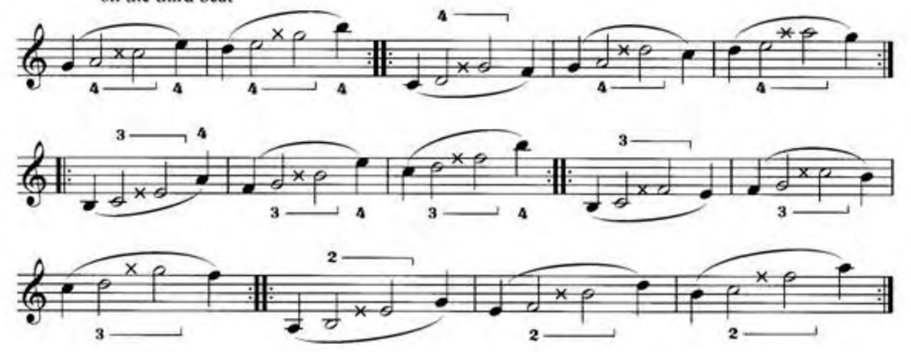
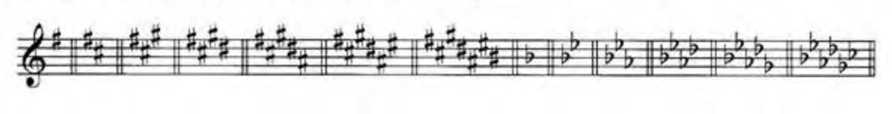
好，我們接著進入左手非常關鍵的一個觀念——「把手指按住」。這在 Fischer《Basics》一一六到一一八頁，分成兩個小主題：一個叫「交疊」（overlapping），一個叫「保留第一指」。這兩件事看起來很細，但它們其實是左手穩定度的祕密武器。
先講交疊。我們看 Ex.164 跟 Ex.165 這組練習。情境是這樣：你在上行，比方說從第四指要跨到下一條弦的第一指。大部分人怎麼按？四指一抬、一指同時落下——「啪」一聲兩件事一起發生。聽起來好像沒問題，可是 Fischer 要你做的剛好相反：第四指要按住，一直按住，按到第一指那個音「已經發出聲音之後」，你才把第四指放開。
這裡有一句話我請大家一定要記住：放下新的手指、跟抬起舊的手指，是「同一個動作的兩半」，不是「兩個各自獨立、又剛好同時的動作」。你不是在做兩件事，你是在做一件事的前半跟後半。這個心態一換，左手立刻就乾淨很多。Fischer 在這裡舉了莫札特 K216 小提琴協奏曲第一樂章當例子，就是要你在換弦的瞬間維持音與音之間的連接，不要出現空隙、不要出現雜音。
那 Ex.164、165 怎麼逼你做到？它用一種誇張化的方式：在每一個換弦的地方，換之前的那一指、跟換之後的那一指，要像拉雙音一樣「一起按在弦上」。也就是說，你那個要預備的手指——譜上會用 x 記號標出來——在第三拍的時候就「無聲地」提早放好，先不要發聲；而原本按著的那一指，要撐到第五拍才剛好抬起來。中間這一段，兩根手指是同時在弦上的。這就是「提早預備、交疊」。
這裡還有一個很好用的變化練習：你可以把這些「一起按著的手指」乾脆當成「實音的雙音」拉出來、讓它真的發聲。為什麼這樣練有用？因為當你聽得到那個雙音，你就騙不了自己——你會清清楚楚知道兩根手指到底有沒有同時在弦上、音準對不對。練熟之後，再回到原本的單音版本，那個交疊的感覺就會留在手裡。
好，第二個主題：保留第一指，Ex.166 跟 Ex.167。這個觀念剛好用在下行音階、或是音階型的樂句。Fischer 的重點是：當你在下行、其他手指一個一個往下放的時候，第一指如果能多留在弦上幾個音、不要急著抬，你的「手型」會更穩、「音準」也會更穩。他舉的是布拉姆斯第一號小提琴奏鳴曲、作品七十八的第一樂章。練習一樣是誇張化處理——它會要求你把第一指留得比平常還要久，久到有點不自然，目的就是讓你身體記住「第一指可以當錨」。
但這裡有個非常重要的提醒，是大家最容易出錯的地方。當你需要把第一指「往後伸」、做伸展（extend）的時候，請注意兩件事。第一，手腕不要往外推。很多人一伸第一指，手腕就跟著凸出去，這是錯的，手腕要保持原來的形狀。第二，拇指跟第一指之間的虎口空間，要保持張開、不可以夾緊。Fischer 特別點名，在第三把位、第二把位、第一把位這幾個位置往後伸第一指的時候，最容易不小心把虎口「夾」起來。一夾緊，手就僵了，音準跟換把都會受影響。
所以這一段你回去就練兩件事：第一，拿 Ex.164、165，每個換弦都做交疊，預備指第三拍無聲放好、舊指第五拍才抬，再用雙音版檢查一次。第二，拿 Ex.166、167，下行時讓第一指多留幾個音當錨，伸展時手腕不外推、虎口不夾緊。記得，左手的穩定，往往不是來自你「按了什麼」，而是來自你「捨得什麼時候才放」。
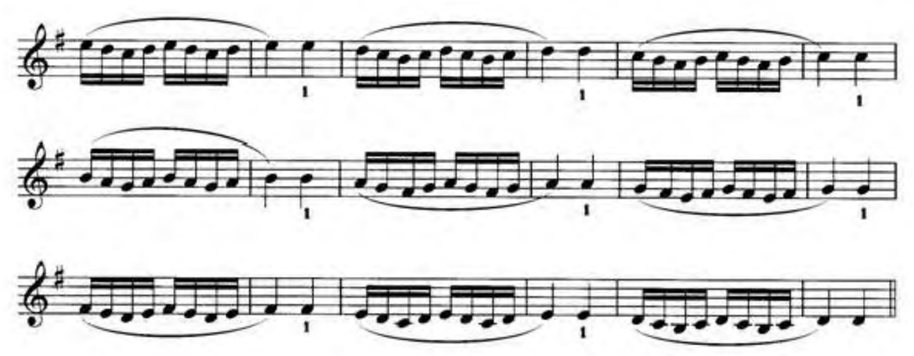
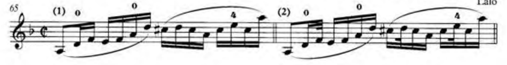
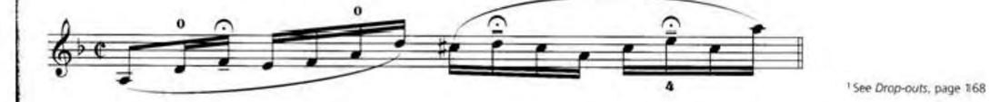
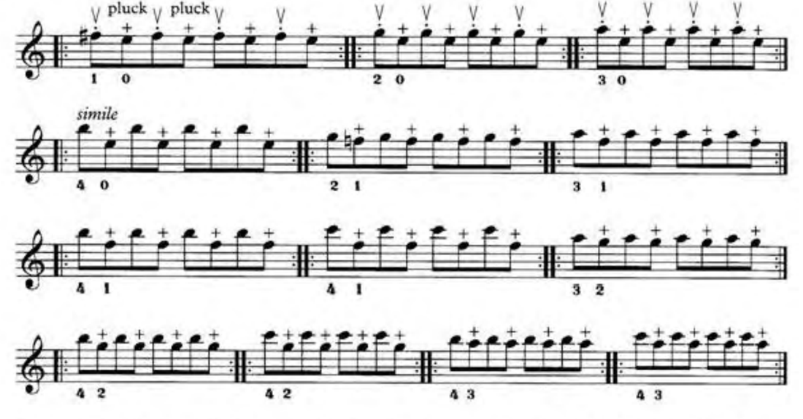
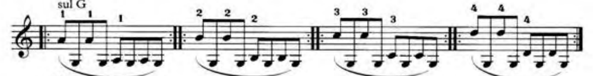
各位，這一段我們要談的是「快速手指」，原書第 119 到 124 頁。先講一個很多人都有的迷思：是不是手指要像鐵鎚一樣，用力往下捶弦，才會有力、才會快？答案是——通常不是。
Fischer 講得很清楚：捶弦式的動作偶爾可以拿來做斷奏、做清晰的咬字，但一般來說，它只會讓你的手指變重、變笨拙。真正決定一切的，不是力量，而是「動作的速度」。手指落下去那一瞬間有多快，這才是關鍵。請大家把「用力」這兩個字，換成「快速」。
那為什麼我們需要快速手指？Fischer 給了兩個理由。第一，當你要拉得大聲，弦的振動幅度會變寬，這時候手指必須「更快」地落下，才能乾淨地壓住那條正在大幅振動的弦。第二個理由很有意思——快速手指反而會讓快速樂段「感覺變慢」。為什麼？因為你「很晚才動、然後超快地動」，動作之間就留下一段比較長的等待時間。手指在空中、或在弦上等著，你會覺得自己有的是時間，從容得很。這是個非常重要的心理感受。
接下來談「時機」，這是整段的核心。Fischer 有一句話聽起來很矛盾，但你一定要記住：**想要彈得平均，你必須不平均地抬落指。** 怎麼說呢？落指的時候，是手指先碰到弦、然後音才響；但抬指的時候，是音在手指離開的那一刻響。這兩件事的時機本來就不一樣。所以結論是：**落指要趕在新的音被需要『之前』就開始往下，抬指則剛好『在』那個音被需要的時候才離開。** 原書用拉羅的《西班牙交響曲》當例子——如果你抬指抬得太晚，那種不平均就會跑出來，被聽見。
所以練習的口訣是：**盡量晚動，然後非常快地動。** 你會得到四樣好東西：清晰度提升、多出一種從容的時間感、能夠拉出飽滿的大音量、還有更精準的細部節奏。如果某些音因為這樣被「彈掉」了、變短了，怎麼補救？就把那些音彈得長一點、響一點，讓它平衡回來。
好，我們進到「抬離」這個動作，對應 Ex.168 跟 Ex.169。Fischer 要你怎麼練？把上弓拉成非常短的、靠近弓尖的跳弓，短到聽起來就像左手撥弦一樣。撥的力量從哪裡來？從手指的「根部關節」撥下去，整隻手不要跟著動。大家試一次，上弓、靠弓尖、短促——是不是有點像 pizzicato 的聲音？
抬離最難的情況，是從高把位抬回空弦。這時候需要「最快」的動作，否則就會出現那種模糊的「毛邊」、那個 fuzz。記住三件事：垂直地抬，不要往旁邊撥；越大聲，抬得越快；在高把位要抬到「空弦立刻就能說話、立刻發聲」那麼快，然後把同樣的速度用回低把位。還有一點別忘了——弓要持續地拉、保持飽滿，抬指之前千萬不要先漸弱。聲音撐住，手指走人。
再來是「漸快」，Ex.170 跟 Ex.171。這個練習的設計很聰明：你從 pp 開始，落指、抬指都慢慢來；隨著音量逐漸變大，你要做的是——**等得更久，然後動得更快。** 音量越大，等待越長，動作越快。整個過程，聲音永遠要保持純淨，你的耳朵要一直去找那個清脆的「叮」。
Fischer 還給了一個很具體的標準：節拍器設 60，把這個過程分成三個階段。一端是「手指從不停止」的狀態——這時候你會聽到爆裂聲、聽到 fuzz；另一端是「手指大部分時間都是靜止的」——往上的手指在空中等著要落下，往下的手指在弦上等著要抬起。你要能夠在這兩端之間自由滑動。
接著是我個人最推薦的練習：「慢速快指」，Ex.172 跟 Ex.173。這是把快指原理，放進極慢速度裡練。怎麼做？用 f、靠近琴橋、拉出持續而平均的音色，然後在「非常慢」的速度下，晚而快地動你的手指。手指抬得比平常更高一點，用全弓，讓弦大幅振動。還有一個常被忽略的細節：**在抬起較高的那根手指之前，先把較低的手指放好。** 這個原則,你可以套用到任何中快速度的樂段——把它放到極慢速度下,用這種方式去練。
到了 Ex.173，重點是手指的「速度感」和「節奏感」要分開：手指的「拍子」是慢的，但每一次「動作」本身是快的，這樣才能跟弓協調。過程中不能有任何多餘的雜音。速度安排是：八分音符先 92、再 120、最後 144，一階一階上去。
最後簡單帶一下「節奏型」練習，Ex.176 到 178。做法是非常快的分弓，停在一個有重音的八分音符上，這個音要用「純淨」的音色——也就是手指要在弓之前就完全壓好弦、形成實音。落下的手指保持微微抬高，在最後一刻才落；抬起的手指則先放到下面去，然後在最後一刻、抬得比平常更高地離開。
所以整段收束成一句話：手指的事，不是用力的事，是時機跟速度的事。盡量晚動，然後快到那條弦來不及模糊。謝謝大家。
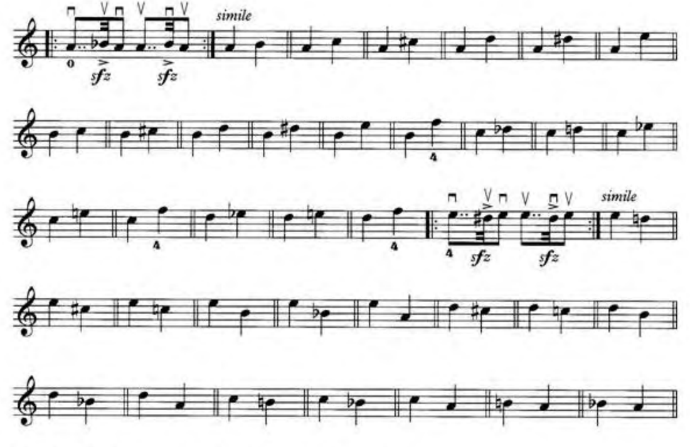
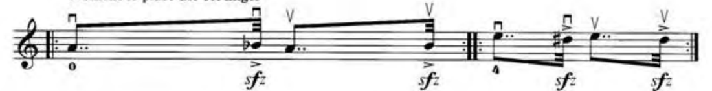
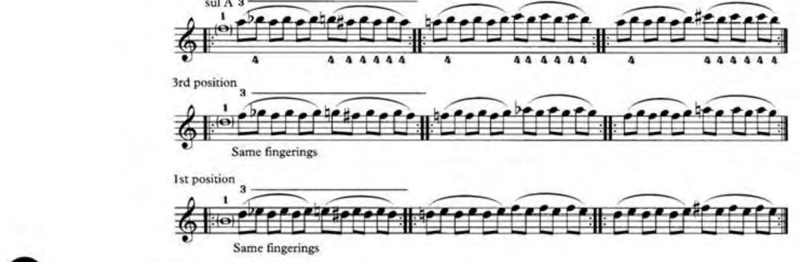
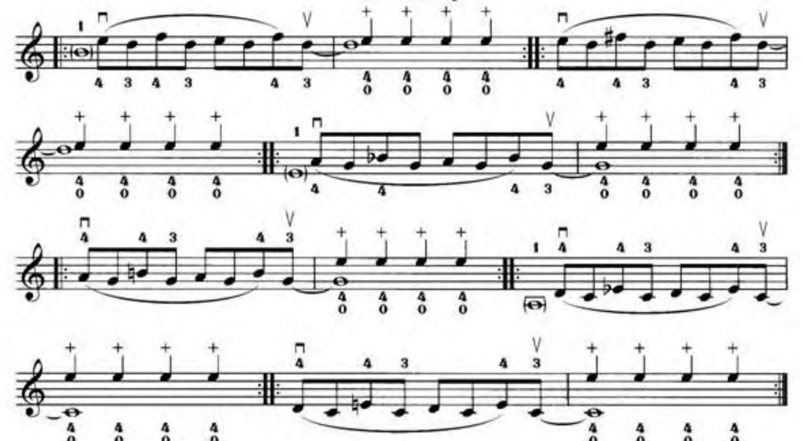
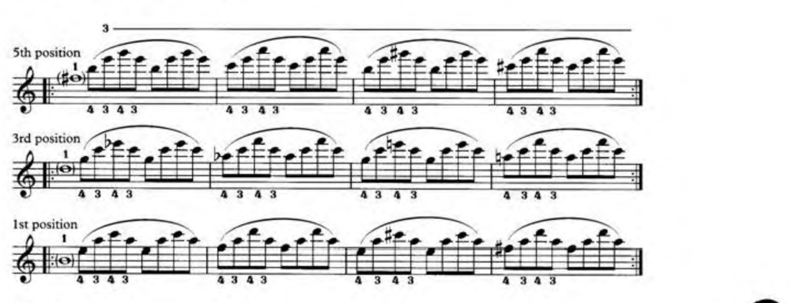
好，我們現在進到左手非常關鍵、也最容易出問題的一指——第四指，也就是小指。這個段落在原書第125到128頁，練習編號是Ex.179到183，大家可以先標起來。
先講最核心的觀念：第四指的動作，要從「根部關節」（base joint）出發，自己上上下下，而不是靠整隻手去搬。很多人小指一下去，整個手掌跟著歪、跟著動，這是錯的。我們要的是——手保持穩定，小指從根部關節獨立地落下、抬起。
要做到這件事，有一個前提：拇指根到第一指之間的空間要保持打開。拇指的位置，可以對著第一指，或者落在第一指跟第二指之間。這個空間一打開，小指才有足夠的活動範圍。然後請注意一條線：從手肘到手背，要保持一直線，不要讓手腕去湊。
接著是下指跟抬指的時機——「晚而快」（drop and lift late and quick）。不要提早把小指準備好懸在那邊發抖，而是該響的那一刻，乾淨俐落地落下；該離開的時候，快速抬起。
再來一個常見毛病：很多人的小指一用力，中間關節就塌下去、凹進去。如果你有這個狀況，原書的建議是——多用指尖去按，少用指腹。把接觸點往指尖移一點，這個關節就比較撐得住。
現在講最重要、我要大聲講三遍的一句話：**絕對不要硬撐**（never strain）。如果某個伸展對你來說真的太難，那就先跳過，不要勉強。怎麼增加你能搆到的距離？關鍵是——讓整隻手、每根手指、還有拇指，完全放鬆。從哪裡撐開？從第一指跟第二指之間打開，然後在「根部關節」處變寬。最常見的錯誤，就是把手繃緊，然後想用第四指「往上拉」去搆那個音。這是反的。正確的是——放鬆地融入這個伸展（relax into the stretch），不是緊繃地去拉。
那如果是第三指跟第四指之間要撐開，原書有個很具體的小技巧：第三指稍微多用指尖的「左側」，也就是往琴頭方向傾一點；第四指稍微多用指尖的「右側」，往琴橋方向傾一點。兩根指尖各自微微外傾，距離自然就出來了，不必硬扯。
好，接下來是練習怎麼做。對應Ex.179到183：
第一個練習方式——把第三指「全程」按住不放，第一指輕輕地放著就好（原書裡放在括號的音，就是這個意思），然後讓第四指「完全靠自己」上下動作。這是訓練小指獨立性最直接的方法。
第二個——用第四指做左手撥弦（left-hand pizzicato）。就用小指去撥弦，這是專門鍛鍊小指力量跟靈活度的好方法。
第三個重點，是換指的習慣：在你要抬起第四指之前，下一個手指必須「已經」在底下就位了。不要等小指離開了才慢吞吞地去放下一指，要先就位、再離開。
還有一個原則貫穿整段：盡量把第一指按住，可以的話連第二指也一起按住。保留這些指頭在弦上，手型才穩定，小指才有依靠。
最後，原書還給了一組很扎實的進階練習，編號是Ex.211到213——用「只有第四指」這一根指頭，去拉音階、琶音，還有分解音程。整段都只用小指換把、換弦來完成。這聽起來很硬，但正是逼小指真正獨立、真正會做事的練習。練的時候一樣，記住那句話：不舒服就放鬆，太難就先跳過，絕不硬撐。
總結一下這一段：第四指從根部關節獨立動作、晚而快地下與抬、整隻手放鬆地撐開而不是用力拉，再配合「第三指按著、小指獨立」跟「下一指先就位」這兩個練習習慣。把這幾點做好，你的小指就會從整隊裡最弱的一環，變成可靠的一員。
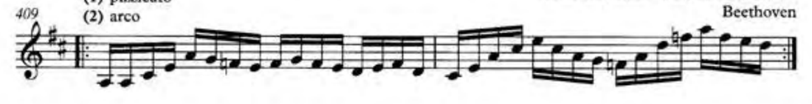
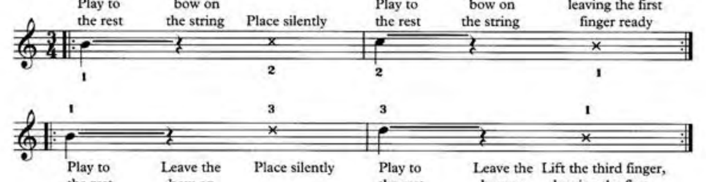
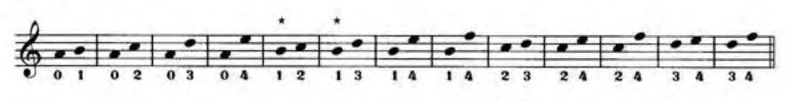
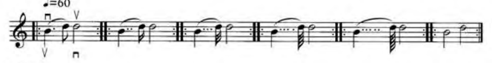
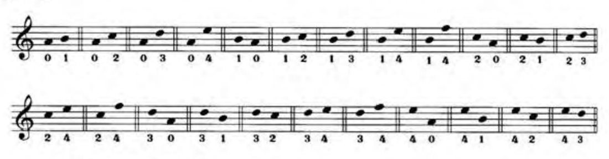
各位，我們現在進到 Simon Fischer《Basics》左手章節裡，我個人覺得最能立刻改變音色的一段——「協調與手指預備」，原書一二九到一三三頁。
先講協調，Ex.184 到 185。Fischer 講了一個很關鍵的觀察：在拉琴的時候，通常「弓」要準備好，其實是比較容易的；難的是「左手手指」要準備好。為什麼？你想想看，左手手指在那個瞬間可能在做多少事——它可能要換形狀，從方形換到伸展；可能是換把之後才落下；可能從不同的高度往下掉；可能要跨弦；甚至要在抬起另一根手指之前先按好。事情太多了，所以手指常常會遲到。
那這條原則大家一定要刻在心裡：左手手指永遠要領先。The left fingers must always lead。手指一晚到會發生什麼事？就是你會聽到一瞬間的「模糊聲」——Fischer 用的字是 fuzz。因為弓已經在動了，可是弦只被按到一半，或者前一根手指太晚抬、結果弓去咬到它。那個渣渣的、不乾淨的聲音，十之八九就是手指遲到造成的。
那 Fischer 怎麼解決？他用一個很聰明的方法：他不是叫你「準時」，他先帶你衝到相反的極端——讓手指「太早」。先誇張到過早，你才有空間往回收。
要找到那個時間感，最好的工具是撥弦，pizzicato。你撥弦的時候，按下手指跟撥弦之間的時間關係是看得一清二楚的——手指一定要先到，弦才會響。先用撥弦把這個時序感受出來，然後，把完全一樣的時序搬到弓上。Fischer 舉的譜例是貝多芬小提琴協奏曲 op.61。撥弦怎麼抓，運弓就怎麼抓。
來看 Ex.184，他叫它「fingers leading」。做法是這樣：你拉一個長音，撐住；在第二拍的時候，把弓「停」在弦上——注意，是停在弦上，不是離弦；然後在第三拍，無聲地放下新的手指，譜上是寫成 x 音符，就是「只按、不發聲」。你會清楚感覺到：手指是在弓還沒動之前就到位的。節拍器從 100 開始，慢慢往上推，推到 200 以上。
接著 Ex.185，這是把它連起來。你把第一個音拉得越來越長，越來越長，讓第二個音越來越靠近換弓的那一點。一開始兩個音之間隔得很開，慢慢地、慢慢地把距離縮短，直到第二個音跟換弓只差那麼一瞬間，可是手指還是先到，協調完美。
這裡 Fischer 還推薦了一個我自己超常用的方法：用韋瓦第《冬》的附點節奏來練。怎麼做？把附點的長音拉到不能再長，把後面的短音弄到不能再短，然後——關鍵——手指永遠比弓早那麼一點點。Fischer 說這是最有效的方法之一，instant results，馬上見效。你今天回去試，當下就會聽到差別。
好，協調講完，我們進到下半段：手指預備，Ex.186 到 190。
Fischer 在這裡區分了兩個概念，很重要：一個叫「技術上的時間」，technical timing；一個叫「音樂上的時間」，musical timing。音樂上，這些音是接連發生的；可是技術上，手指的動作要提前。
原則是這樣：在平順的下行樂句裡——也就是你往低音方向走的時候——低把位的那根手指，必須在上面那根手指抬起來之前，就已經「準備好」在弦上了。
Fischer 用克羅采第二號當例子。所謂一根「預備好」的手指，是指你在拉「前一個音」的時候，就把它放到弦上了。一開始只是半按——half-stopping，輕輕搭著；等到前一根手指抬起來的那一刻，它才完全按實，full-stopping。
那要怎麼練到這個感覺？Fischer 又用一樣的招數：誇張到極端。他叫你把預備的手指放得「非常早」，早到像一個切分音一樣，譜上一樣標成 x 音符。但是請特別注意——千萬不要把它壓下去。Do not press。只是輕輕地、放鬆地搭在弦上休息。然後，你按實這個新音的時間點，要跟你抬起前一根手指的時間點「完全同時」。
這句話請大家收好，這是整段的精髓：按好新的音，跟結束舊的音，是同一個動作的兩半。Stopping the new note and finishing the old note are two halves of one action。不是先放這根、再抬那根的兩個分開動作，而是一上一下、同一個瞬間完成。你練到這個，下行音階會變得乾淨、連貫、沒有任何縫隙。
所以我們把這一段收束起來：協調，是手指永遠領先，先用撥弦找時序，再用 Ex.184、185 跟韋瓦第附點法搬到弓上；手指預備，是低指先半按等著，按下與抬起當成一個動作。兩件事其實是同一個精神——讓左手永遠走在弓的前面那麼一點點。
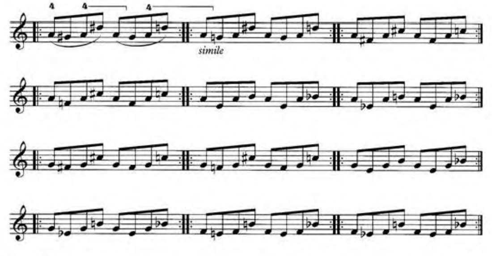
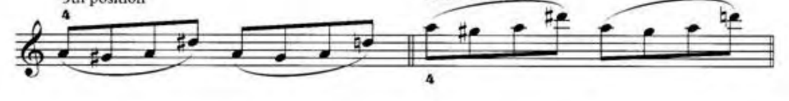
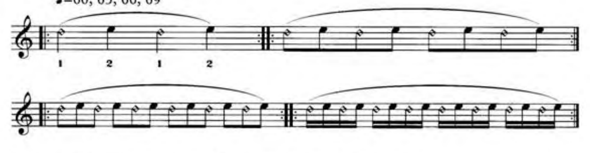
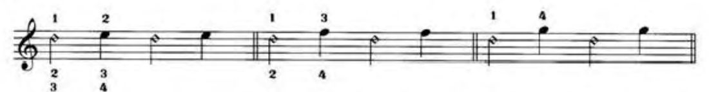
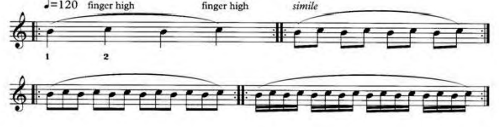
好，我們現在進到左手裡面，很多人最頭痛、也最容易練壞的一個技巧——顫音，也就是 trill。Simon Fischer 在《Basics》第一百三十四到一百三十八頁，用了一連串練習把它拆得非常清楚。今天這六分鐘，我希望大家帶走的不是「顫音要練快」，而是「顫音要練得不費力」。
先講一個最核心、也最反直覺的觀念。Fischer 說：每一個動作，都有一個反向的對應動作。在顫音裡面，當你上面那根手指敲下去的時候，下面那根按住的手指，其實是往「相反方向」微微移動的——幅度小到幾乎看不見，但它確實在動。這就是 Ex.191 到 193 想讓你體會的事情。
那這裡有一個最常見的毛病：下面那根按住的手指「壓太用力」。你只要把下指死死地壓在指板上，上指就被卡住了，動不了、也快不起來。所以記住，按住的那根，是「放著」，不是「壓著」。
我們來做 Ex.191 到 193 這組泛音顫音練習，這招很神奇。你把下指輕輕放在「泛音」的位置——注意是泛音的高度，不是把弦壓到底的實音——然後在上面顫。顫的同時，你要刻意去放鬆：手腕、手掌、手指、連大拇指都要鬆。判斷你有沒有做對的標準只有一個——那個泛音要「一直清楚地響著」。如果泛音破掉、悶掉，代表你哪裡又緊了、又壓了。節拍器先設六十，穩了之後往上推，六十三、六十六、六十九。上指落下的時候，下指要相對地抬得「相當高」，這就是剛剛講的反向動作。
當你顫得夠快、而且下指始終輕輕貼著弦的時候，會發生一件很妙的事：每一對音裡面上面那個泛音，會比平常高五度發出來。這代表你做到了——那種異常的輕鬆、輕盈的感覺。Fischer 的目標是：用「最少的力氣」做出「最快的顫音」，快到手裡面幾乎沒有任何感覺。然後——這是關鍵——你要把這種「不費力的感覺」，原封不動搬回到一般的、實音的顫音上。
接下來換另一個方向：Ex.194，逐音建立顫音。這招是用來練「聲音的品質」。請你靠近琴橋，用很長的 forte 長弓，不要抖音。然後把要顫的那根手指，抬到比平常「稍微高一點」的位置，非常快地敲下去，再非常快地抬起來，然後放鬆。你要去聽每一下那個清脆的「ping」。先練兩個音，乾淨了再三個音，再慢慢往上加，一直堆到八個、九個音。Fischer 在這裡丟出三個你要隨時問自己的問題：第一，手指掉下去有多快？第二，它停留多久？第三，它抬起來有多快？這三個時間點，決定了你顫音的清晰度。如果是在雙音上練，那些不動、按著的手指，一樣不要過度用力去壓。
再來是 Ex.195，講「方向」。Fischer 講得很妙：顫的那根手指，動作是「上、上、上、上」——是一直往上彈，不是「下、下」，也不是「下、上」這樣來回。他舉了 Heifetz 拉布魯赫的錄音當例子，你把它放慢一半來聽，那個顫音聽起來真的是這樣一組一組往上分的。所以抬指的時候，請你想像——這根弦「非常燙」，你的手指一碰到就要立刻彈開。這個畫面會幫你把抬指做得又快又輕。
最後 Ex.196，節奏練習。這一條 Fischer 說它是 Sevcik 那種機械練習的「快速替代版」，是一個非常好的全面暖身，因為它涵蓋了「所有兩指的組合」。怎麼做？節拍器從六十開始，慢慢推到八十；每一下的落指和抬指，都要「又晚、又快」——就是撐到節拍快來了才動，動的瞬間要俐落；然後大聲地拉，force 出來。最重要的，所有動作都從「根部關節」發出來，手掌本身保持安定、不要跟著亂晃。
好，總結一下這六分鐘：顫音的祕密不在快，在「鬆」。下指放著別壓、上指像碰到燙弦一樣彈開、用泛音當你的放鬆檢查表，再用逐音 ping 聲確認品質。把不費力的感覺找出來，速度自然就跟著來了。
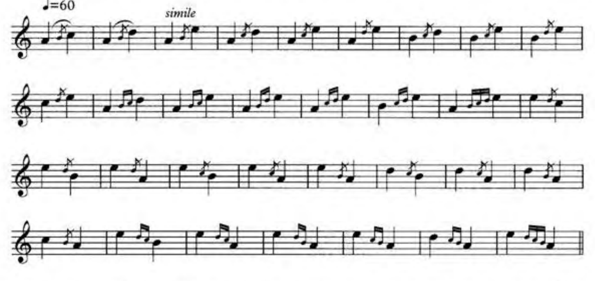
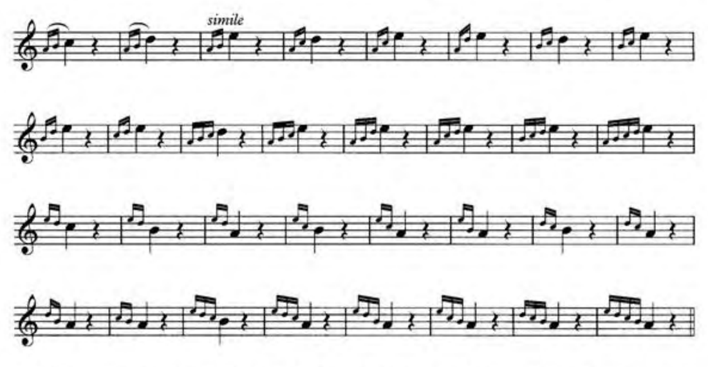
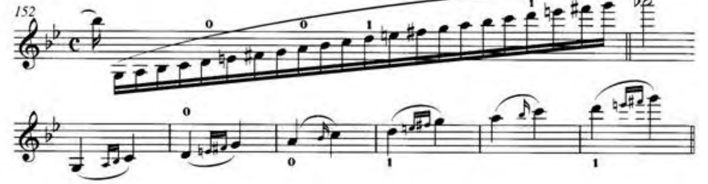
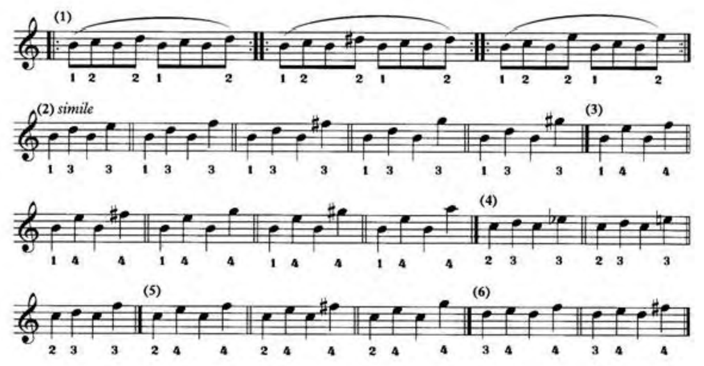
大家好，我們現在來看《Basics》左手章節裡很關鍵的一個觀念，叫做「區塊」，也就是 Blocks，練習編號是 Ex.197。
先講一個大家一定遇過的卡關。當你在練快速音群的時候，會發現一件事：靠每一根手指「一個一個」獨立地放下、抬起，這個方法只能撐到某一個速度。一旦超過那個速度，你的手指就追不上了，怎麼練都黏在一起、含糊不清。Simon Fischer 在這裡給的解方非常聰明：超過那個速度之後，你不要再一根一根動，而是把「一群手指」當成一個整體，用「一個動作」同時放下或抬起，手指排開的樣子有點像扇形展開，讓那幾個音幾乎同時就定位。
這背後的邏輯其實很單純：手指動作的「次數」越少，快速樂句就會感覺越慢、越從容。Fischer 在書裡有舉一個實際的數字：同樣一段，原本要十七個手指動作，用了區塊的概念之後——不算換把位的話——只剩下六個動作。十七降到六，你的左手當然就輕鬆了。
那實際怎麼操作？我們分上行跟下行兩種情況。
先講「上行」。你在拉第一個音的時候，就要趁這個空檔，把後面要用到的手指，全部預備在弦的「上方」，而且要照著「全音、半音」的音程關係先排好位置——也就是該方形的方形、該伸展的伸展。準備好之後，這一整組手指「一起」落下，用一個動作放到弦上。注意，雖然是一起下去，每一個音聽起來還是要清楚、要乾淨，不能糊成一團。
再來是「下行」。下行的關鍵在於，你要先把下方的那些音，全部按好、而且要按準音準，預先就定位。然後呢，整組手指像翻倒一樣，用一個動作把它們一起「掀」離弦。
接著進到比較細的協調。練的時候，第一個音不要停頓、要一直拉下去，弓先動，然後在弓動之後的「一瞬間」，再把手指那組掀上或掀下。順序記住：弓先走，手指動作緊跟在後面那一刻發生。
這個技巧真正的用武之地，就是那些飛快的音階跑句。書裡點名了布魯赫小提琴協奏曲（Bruch Concerto）那種急速的段落，正是區塊概念大顯身手的地方。
最後給大家一個練習上的提醒：不要只用一個調來練。請換用各種不同的調號去練習這個 Ex.197，因為不同調號的全音半音排列不一樣，你的手指分組方式也會跟著變。多換幾個調，你才能真正把這個「整組落下、整組掀起」的能力，內化成不管什麼指法都做得出來的本能。好，這就是區塊。
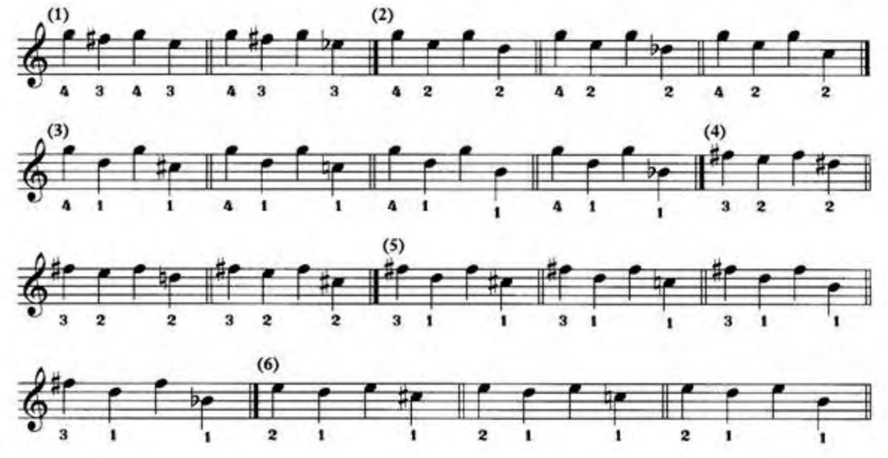
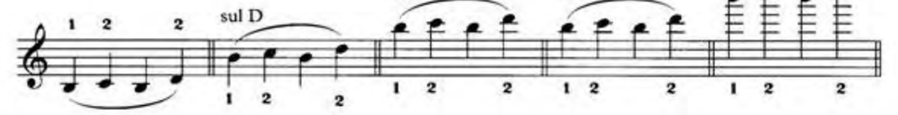
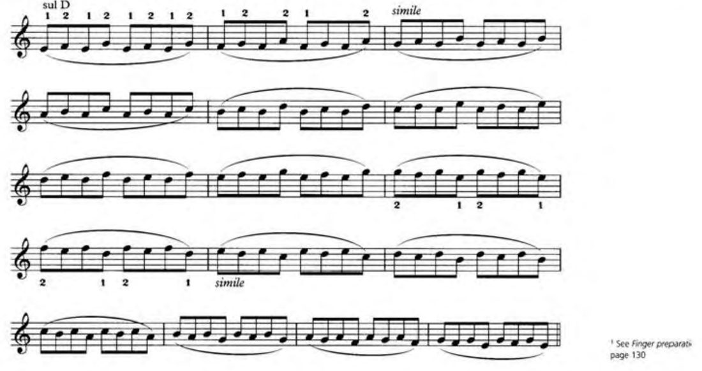
好，我們現在進到「伸展與收縮」這個小節，原書是一百四十到一百四十四頁，練習編號從 Ex.198 到 Ex.203。這兩件事，其實是同一枚硬幣的兩面——一邊是把手指撐開、一邊是把手指收攏。我們先談伸展。
先講一個讓很多人鬆一口氣的觀念。Ex.198 到 201 這些第一把位的伸展，如果你的手就是撐不到那麼開，沒關係，書上講得很清楚：手指能伸多遠，就伸多遠。不要硬逼、不要受傷。我們追求的是方法對，而不是一次到位。
那方法是什麼？第一，手腕。伸展的時候，手腕要跟前臂大致保持在一條線上。最常見的錯誤，就是手指往上構音的同時，整個手腕也跟著往前頂出去。不要這樣。手腕往前推，反而把伸展的空間鎖死了。拇指呢？拇指要放鬆、保持在前面，給上面的手指留出空間。
第二，也是最核心的一點：伸展是從「根部關節」也就是 base joint 打開的，不是從指尖硬扳。你要用指尖最能打開空間的那一側去張開那個角度。而且在這些練習裡，二、三、四指要盡量保持直立，不要塌、不要躺平。記住口訣：撐開靠根部，不是靠把指節壓扁。
第三點我要特別強調，這是判斷你做對沒做對的試金石——正在發聲的那個音，音準不能變。你在上方或下方伸出另一根手指去構音的時候，原本按著、正在響的那個實音，絕對不能被你帶歪、帶跑掉。很多人一伸展，旋律音就晃了，那就是失敗了。
接著是上行跟下行的細節，這很實用。上行的時候——Ex.199 這一類——兩根手指裡，比較低的那一根要輕輕留在弦上，不要因為你要放上面那根，就把低音抬起來。下行的時候反過來：你要先把第二個音、第四個音放好，確定到位了，才放掉原本的第一個、第三個音。順序顛倒，連接就斷掉了。
那要怎麼把伸展練到準？書上給了一個很聰明的練習法：學會「丈量」這個伸展。怎麼丈量？你不只練那一個目標音，你還要練著往它周圍的音去伸展，左邊一點、右邊一點，讓你的手對這段距離建立空間感、建立座標。原書就拿布拉姆斯第一號小提琴奏鳴曲 op.78 當例子，去體會這種伸展的丈量。練熟了，你的手會「知道」那個距離在哪裡，而不是每次都用猜的。
好，講完伸展，我們翻面，講收縮，也就是 Ex.202、203。收縮其實簡單很多，但同樣有一個關鍵指示：整段練習裡，第一指要一直按著、不要動。把第一指當錨點，然後把其他手指收攏成密集的指型——也就是 close-position 的指法排列。第一指定住，後面的手指往回收，這就是收縮的核心動作。練的時候，別只在一條弦上練，要在其他弦的同樣位置一樣照做一遍，讓四條弦都熟。
最後，我想把這一小節接回整個「左手」這一章。你看，從前面的方形與伸展、按弦、換把，到現在的伸展與收縮，其實都在講同一件事：左手不是僵硬的一個形狀，它是一個會呼吸、會丈量距離、會自己調整的系統。伸展讓手張開、收縮讓手收攏，這一開一合，就是左手真正的彈性所在。把這個練好，你的左手才算是真正活了起來。
好，我們花兩分鐘，把整個左手章節的精神收束一下。
如果你問我，整章只留一條線，那就是「最小壓力」——needed 的時候按到足夠，但能少用力就少用力。記得我們的口訣：放開的次數，要和按下的次數一樣多。手指不是一直黏在弦上，而是一按、一放、一按、一放。
第二，所有的動作都從根部關節出發，手本身是安定的、不亂晃的。配上那條讓很多人驚訝的原則：快的手指，要「晚出手、快落下」。你不是提早慢慢爬過去，而是等到最後一刻，啪一下落下。這會讓很快的樂段，在你心裡感覺起來是慢的，於是你有餘裕去控制節奏、也能把音色撐得飽滿。像 Ex.145 那種快速音群，就是這樣練的。
第三，預備和重疊。下一個音，和上一個音，其實是同一個動作的兩半——當這個音還在響，下一根手指已經悄悄準備好了。這就是左手永遠要「領在弓的前面」的原因：手指先到位，弓再發聲。
第四，用手型代替換把。多想「方形」跟「伸展」這兩個手型，手盡量留在同一個把位，而不是動不動就換把。
最後一件最重要的事：永遠不要硬撐。要伸展，就放鬆地伸進去，不是用蠻力去夠。
那回去怎麼練？拜託你，一次只帶「一個」主題進琴房。今天就練放開，明天就練晚落下。這些原則不是一張要你趕完的檢查表，它們是診斷工具——哪裡卡住，就拿對應的那一條,去照一照、修一修。慢慢來，你的左手會謝謝你。
— 講稿結束 —
原著 Simon Fischer《Basics — 300 Exercises and Practice Routines for the Violin》